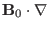
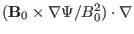

Next: Fourier expansion over and Up: Flux coordinate system Previous: Radial differential operator
The MHD eigenmode equations (154) and (161) involve two
surface operators,
 and
 (they are called surface operators because
they involve only differential on magnetic surfaces). Next, we provide the
form of the two operators in flux coordinate system
 .
Using Eq. (165), the
operator (usually
called magnetic differential operator) is written
.
Using Eq. (165), the
operator (usually
called magnetic differential operator) is written